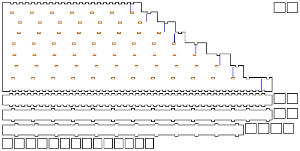

Panpipes
A low raft of panpipes in 3mm plywood: eight closed pipes from E3 to E4, the E natural minor scale, side by side between two plates. You blow across the open tops, one pipe at a time. Each pipe is stopped by a plug pressed up from its open bottom, and moving the plug tunes it.
Output is millimetre-true — 1 user unit = 1mm with a physical width/height — so it prints and cuts at real size.
It has not been cut or played yet. The pipe lengths come from the quarter-wave formula with a textbook end correction, and the player's lip changes that correction. The plugs are there to absorb it: Before you cut says by how much.
 |
| sheet 1 of 3: the front plate, three walls and every plug |

Built for LaserMadeMusic.
The rest of the build files — every instrument, generator and tool, indexed.
The panpipes
| Notes | E3 F♯3 G3 A3 B3 C4 D4 E4, the E natural minor scale, low to high |
| Bore | rectangular, 20mm front to back in every pipe, 22mm across the lowest narrowing to 16mm across the highest |
| Raft | 179mm across, 26mm deep, 538.8mm down the longest pipe |
| Parts | 35: two plates, nine walls and 24 plug layers, on three sheets of 3mm ply; the strip edge adds a strip of 1.5mm stock |
| Joints | press-fit throughout, sealed with shellac; only the strip edge is glued |
Why it stops at E3. A closed pipe sounds a quarter wavelength, so E3 needs about 518mm of air, and the pipe is cut 21mm longer again for its plug and the room to move it. D3 would need a pipe about 603mm long, and the parts must fit a 600 × 305mm bed with a margin round them.
Why the pipes narrow. Low pipes want a wide bore to sound full, and high ones a narrow bore to speak easily: a pipe that is short for its width plays breathy. Every pipe here is at least 12.7 times as long as the diameter of the circle of its area. The depth, front to back, stays at 20mm so the plates stay flat.
| Pipe | Hz | Bore | Plug face, from the rim | Pipe as cut |
|---|---|---|---|---|
| E3 | 164.81 | 22.00 × 20mm | 517.8mm | 538.8mm |
| F♯3 | 185.00 | 21.14 × 20mm | 460.7mm | 481.7mm |
| G3 | 196.00 | 20.29 × 20mm | 434.6mm | 455.6mm |
| A3 | 220.00 | 19.43 × 20mm | 386.5mm | 407.5mm |
| B3 | 246.94 | 18.57 × 20mm | 343.8mm | 364.8mm |
| C4 | 261.63 | 17.71 × 20mm | 324.3mm | 345.3mm |
| D4 | 293.66 | 16.86 × 20mm | 288.3mm | 309.3mm |
| E4 | 329.63 | 16.00 × 20mm | 256.4mm | 277.4mm |
The tops are flush, so the rim is one straight line to blow along; the bottoms step down with the pipes. Each pipe has, from the rim down:
- The air column, from the rim to the plug's face: a quarter wavelength less the open end's correction, 0.61 times the radius of the circle with the bore's area.
- The plug: three layers of ply, each 0.12mm bigger than the bore both ways, the square flute's press-fit for its plug discs. A blue line across the front plate marks where its face goes.
- 12mm of empty pipe below the plug, so it can be pushed down to flatten the note as well as up to sharpen it.
How it goes together. The front and back plates are the faces; nine walls stand between them, one between each pair of pipes and one at each end. An inner wall has 6mm tabs about 40mm apart, through slots in both plates. The two end walls have the square flute's finger joint, a 6mm finger every 12mm, in notches in the plates' long edges, flush with the outside. An inner wall is as long as the longer of its two pipes, so it runs on past the shorter one's bottom, beside the plates' staircase edge; its tabs there are fingers in notches in that edge.
The blowing edge
A panpipe speaks when a thin jet of breath, aimed across the open top, strikes the far rim, the top of the back plate, and flips in and out of the pipe. The far rim is the pipe's only edge, and its sharpness sets the tone: a sharp edge gives a clear, strong note that starts easily, and a blunt one a breathier note that needs the jet aimed more exactly. Cane panpipes have walls 1 to 2mm thick. A laser cuts 3mm ply square, which is at the blunt end of what plays.
The near rim, the front plate's top, is where the lower lip rests. It is not an edge and does not need to be sharp. In every build, sand it round so it is comfortable.
The generator draws four blowing edges, chosen with --edge=; each has its own cut files and its own view in 3D. They differ only in the back plate and, for strip, a fourth sheet.
chamfer, the default: sand a bevel
The back plate is cut square, with a blue line engraved across its outside face 2mm below the rim. Sand a 45° bevel on the outside of the rim, down to the line, leaving 1mm of edge on the inside of the bore. The tops are flush, so a sanding block held at 45° along the whole raft does every pipe at once, after assembly.
This is the one to start with: no extra parts, the laser marks where to stop, and a 1mm edge is in the cane pipes' range. Sand until the line just disappears, and no further; the inside face must stay untouched, since that is the edge.
plain: the edge as cut
The back plate as it comes off the laser, a 3mm square edge. It plays: wooden panpipes drilled from a block have thick, rounded rims. Expect a breathier tone, most of all in the short high pipes, and a narrower window of aim. Cut this one if you want to hear the difference a bevel makes, and chamfer it afterwards: it is the same plate without the line.
notch: a U over every pipe
A U-shaped notch is cut into the back plate's rim over each pipe, half the pipe's width across and up to 6.5mm deep, as on a quena. The notch focuses where the jet strikes, and the laser cuts it, so there is no sanding. But the edge at the bottom of the notch is still the full 3mm deep, so it is less sharp than a chamfer. It combines with one: sand a small bevel inside each notch with a round file to get both.
The notch removes some of the back wall at the top of each pipe, which shortens the pipe a little acoustically; the plugs take that up.
strip: a thin edge glued on
The back plate stops 5mm short of the rim, and a strip of 1.5mm stock, 5mm tall and the raft's full width, is glued along its top edge, inner face flush with the bore, so the rim is 1.5mm thick. The walls run up past the plate to the rim, and the strip glues to their back edges as well. It is cut from its own sheet, panpipes-E3-strip-1.5mm-sheet1-cut-files.svg, in 1.5mm ply or veneer.
This gives the thinnest edge without sanding, at the cost of a second material and a glued joint, the one glued joint in any build. The strip has no joints of its own, so its kerf hardly matters.
Which to cut
| Edge | Edge left | Extra work | Extra parts |
|---|---|---|---|
chamfer |
1mm | sand a 45° bevel to the line | none |
plain |
3mm | none | none |
notch |
3mm, in a 6.5mm U | none, or a round file to bevel each notch | none |
strip |
1.5mm | glue the strip on | one strip of 1.5mm stock |
Turn it in 3D
Before you cut
The end correction is a textbook figure, and the lip changes it. The pipes are cut for 0.61 times the bore's equivalent radius, an unflanged open end's. Your lower lip covers part of the opening and the raft's own width flanges it, and both make the real correction different. The whole range from 0.3 to 0.61 moves the plugs 3.1 to 3.7mm, and every plug has 12mm of pipe below it to come down into, and as far as it likes to go up. So the plugs can absorb it whichever way it falls.
How far a plug tunes. A millimetre of plug moves the note 3.3 cents in the E3 pipe and 6.6 cents in the E4 pipe. Pushed all the way down, into its 12mm, a plug flattens its pipe by 39 cents (E3) to 77 cents (E4), and pushed up it sharpens it as far as you like. To tune for another temperament or A, redraw with --notes= or move the plugs.
Cut it in 3mm Baltic birch plywood, at a 0.13mm kerf. The tabs and fingers are 6mm wide with no play, so the fit comes from the kerf compensation alone. If your laser's kerf is not 0.13mm, redraw the sheets for its own with --kerf=: a press-fit that comes out loose wants a wider kerf, one too tight to close a narrower one.
The longest parts are 538.9mm with the kerf, the front plate, the back plate and the end wall beside the lowest pipe. The largest sheet is 600 × 304mm, so the bed must be the full 600 × 305mm. The generator checks against it.
Run the engrave first, then the cuts. Blue engraves the plugs' places on the front plate and, on the chamfer build, the bevel's line on the back plate. Then orange cuts the slots, and black frees the parts. Both plates are drawn outside face up, so the lines land on the outside.
Building it
- For the
stripedge only: glue the strip along the back plate's cut-down top edge, inner faces flush, and let it dry. Every other edge is made after assembly. - Press the nine walls into the back plate, tabs through the slots, its outside face down. The two end walls go in the notches along its long edges, the longer one beside the E3 pipe. Each inner wall fits only its own place, since every wall is a different length.
- Lay the front plate on, outside face up, so its blue lines show, and press it down onto the walls' tabs. Rubber bands round the raft hold it while you work along.
- Seal every seam with high-cut shellac, outside and inside as far as a brush on a stick reaches down each pipe from both ends. A closed pipe that leaks will not speak at its bottom note.
- Make the blowing edge: for
chamfer, sand the bevel down to the line; fornotch, file each notch's edge if you want it sharper. Round the front rim where the lip rests in every build, and shellac both rims, which are end grain. - Once the shellac is dry, press each pipe's three plug layers up into it from the bottom, one at a time, with a dowel, until the top one's face is at the pipe's blue line. Sealing first keeps shellac off the plugs, which have to stay free to move.
Tuning
Blow each pipe and read its pitch with a tuner. Flat: push the plug up. Sharp: push it down. Move it a millimetre at a time; at 3.3 to 6.6 cents a millimetre, a millimetre is a lot.
A plug that has gone too far up comes back down by pushing from the top with a long dowel. If a plug works loose, shellac on its edges, left to dry before it goes back in, tightens it.
Regenerating it
python3 panpipes.py --no-write # the checks, writing nothing
python3 panpipes.py --out=cut-files # the chamfer build's sheets
python3 panpipes.py --edge=notch --out=cut-files # another edge: chamfer, plain, notch, strip
python3 panpipes.py --notes=G3,A3,B3,C4,D4,E4,F#4,G4 --no-write # other pipes, low to high
python3 panpipes.py --end=0.4 --no-write # a different open-end correction
python3 panpipes.py --kerf=0.18 --out=mine # for a laser with a 0.18mm kerf
python3 panpipes.py --page-to=turn.html # the 3D view, all four edgespanpipes.py draws nothing until every check passes:
- every blue line on the front is its plug's face;
- the walls stand a bore apart;
- every plug is a press-fit in its bore;
- every plug can come down as well as go up;
- every pipe is walled to its bottom;
- the rim is clear of every joint;
- every slot keeps ply between it and the plate's edge;
- no tab straddles a pipe's bottom, which it reports only when one does;
- on the
notchbuild, every notch stays within its pipe and clear of the joints; - on the
chamferbuild, the bevel leaves an edge inside the bore; - no pipe is fat for its length;
- the longest part fits the bed;
- every sheet fits the bed;
- every part is on a sheet.
It imports the square flute's kerf, finger joint and packer from square_flute.py, and the mitred offset from the four-hole ocarinas' four_hole_ocarinas.py, so square-flute, four-hole-ocarinas, swept-curve and lasermade-tools must be checked out beside this repository.
Files
cut-files/panpipes-E3-chamfer-sheet1-cut-files.svg to -sheet3- |
the default build: the front plate, walls and plugs; the back plate with its bevel line and walls; the last walls |
cut-files/panpipes-E3-plain-sheet1-cut-files.svg to -sheet3- |
the plain edge |
cut-files/panpipes-E3-notch-sheet1-cut-files.svg to -sheet3- |
the notched edge |
cut-files/panpipes-E3-strip-sheet1-cut-files.svg to -sheet3- · cut-files/panpipes-E3-strip-1.5mm-sheet1-cut-files.svg |
the strip edge, and the strip on its own sheet of 1.5mm stock |
previews/ |
a display rendering of every sheet — not cut files |
turn.html |
the 3D view, all four edges, on a page of its own |
panpipes.py |
the generator, its checks, the cut files and the 3D view |
README.md · index.html |
this writeup and its published page; the markdown is the source |
.repro |
the command that draws each generated file |
Released under CC0 1.0.